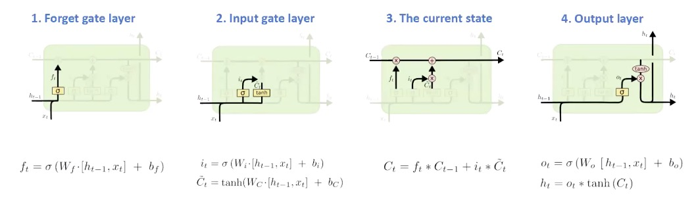

RNN—>LSTM

https://www.youtube.com/watch?v=EC3SvfW0Z_A
。youtube 关于LSTM的视频介绍
https://segmentfault.com/a/1190000016626745
。非常棒的LSTM介绍
https://zhuanlan.zhihu.com/p/51679783
ELMO原理与上手
https://zhuanlan.zhihu.com/p/37684922
知乎上ELMO 介绍，并不知道效果，待观察
https://codeday.me/bug/20190111/518626.html
如何存储 FREEBASE这样的数据库
https://blog.csdn.net/nohackcc/article/details/12851657
python 存储triple三元组